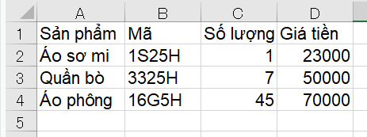

Bài viết tiếp theo trong chuyên đề xử lý file Excel trong python, chúng ta sẽ học cách ghi file Excel trong Python. Bạn sẽ học được cách tạo một file excel mới và ghi dữ liệu đã chuẩn bị sẵn vào file excel. Bạn cũng sẽ học được cách mở, chỉnh sửa và ghi dữ liệu vào file Excel đã có sẵn bằng module openpyxl trong Python, với các thao tác như thêm ô, sửa nội dung ô, thêm sheet, xóa và copy sheet v.v.. sau bài học này.
Chúng ta có 2 phương pháp để ghi dữ liệu vào file Excel trong Python như sau:
- Tạo một file excel mới và ghi dữ liệu vào
- Mở một file excel có sẵn và ghi dữ liệu vào
Tạo file excel mới và ghi dữ liệu vào file excel trong Python
Để ghi dữ liệu vào file Excel trong Python, chúng ta có thể tạo ra một file Excel mới và ghi dữ liệu vào đó.
Chúng ta sẽ sử dụng một hàm tự tạo mà Kiyoshi đã chuẩn bị sau đây. Các tham số sử dụng trong hàm gồm có:
input_detail: nội dung cần ghi vào file excel dưới dạng một list 2 chiều (list trong list), với các list con tương ứng với từng dòng cần ghi trong file exceloutput_excel_path: đường dẫn file excel mới dùng để lưu dữ liệu.
import openpyxl |
Khi cần sử dụng hàm trên để lưu lại nội dung đã ghi vào file Excel, bạn đơn giản chuẩn bị một list 2 chiều chứa nội dung là các dòng cần ghi vào file, sau đó truyền vào hàm ở trên là xong. Ví dụ:
input_detail =[['Sản phẩm', 'Mã', 'Số lượng' , 'Giá tiền'],['Áo sơ mi', '1S25H', 1, 23000],['Quần bò', '3325H', 7, 50000],['Áo phông', '16G5H', 45, 70000]] |
Kết quả, một file sample.xlsx được tạo mới với nội dung từ list 2 chiều chỉ định như sau:

Cách làm này đặc biệt hữu dụng khi bạn sử dụng python để liên kết tới một cơ sở dữ liệu (bằng cách sử dụng mysql.connector chẳng hạn), sau đó trích xuất và lưu lại các dữ liệu có trong Database đó vào các file excel chẳng hạn. Khi đó bạn chỉ cần lấy các dữ liệu từ Database đó dưới dạng một list 2 chiều, và truyền vào hàm mà Kiyoshi đã chuẩn bị ở trên là xong.
Lại nữa, trong quá trình lấy dữ liệu trước khi ghi vào trong file excel, bạn cũng có thể sử dụng hàm in bản đẹp pprint() để hiển thị và kiểm tra các dữ liệu trong list 2 chiều ở trên một cách gọn gàng và thông minh.
Mở file excel có sẵn và ghi dữ liệu vào file Excel trong python
Ngoài cách tạo ra một file excel mới để ghi dữ liệu, chúng ta cũng có thể mở một file excel sẵn có, sau đó thực hiện các xử lý như thêm xoá hàng, cột, sheet vân vân mây mây, để thay đổi nội dung file Excel này và lưu lại nội dung chỉnh sửa vào file ban đầu.
Để ghi dữ liệu vào file Excel trong Python, trước hết bạn cần mở và đọc file Excel đó. Hãy tham khảo bài viết Đọc file Excel trong python trước khi tiếp tục nhé.
Trong bài này, chúng ta sẽ tiến hành ghi dữ liệu vào file Excel có tên sample.xlsx gồm 2 sheet, với Sheet1 có nội dung sau đây:
Giả sử bạn đã mở file exel trên và đọc toàn bộ nội dung trong Sheet1 như sau:
import openpyxl |
Chúng ta sẽ tiến hành các thao tác ghi dữ liệu vào file Excel trong Python như ở dưới đây:
Sửa nội dung trong ô Excel | cell()
Để sửa nội dung trong ô Excel bằng python, chúng ta truy cập tới ô đó trong sheet và thay thế giá trị mới cho ô.
sheet['C1'] = 'abc' |
Chúng ta cũng có thể dùng phương thức cell() để chỉ định vị trí của cell cần sửa nội dung và sau đó thay thế giá trị mới như sau:
#sửa dữ liệu ô C1 |
Cả hai cách làm trên đều sửa nội dung trong ô và đưa ra cùng một kết quả như sau:
pprint.pprint(list(sheet.values), width=40) |
Lưu ý là khi chúng ta chỉnh sửa file Excel, kết quả chỉnh sửa có thể in ra màn hình. Tuy nhiên do chúng ta chưa ghi kết quả này vào file Excel nên bản thân file Excel đó không thay đổi.
Để ghi lại và lưu các thay đổi này vào file Excel trong python, hãy tìm hiểu ở phần dưới cùng của bài viết này nhé.
Thêm nội dung vào ô Excel | cell()
Nếu trong một ô chưa có nội dung trước đó, chúng ta cũng có thể thêm nội dung vào ô trong Excel bằng python cũng với hai cách ở trên như sau:
#thêm dữ liệu ô E1 |
Kết quả, hai ô E1 và E2 sẽ được thêm dữ liệu như sau:
pprint.pprint(list(sheet.values), width=20) |
Sửa ô Excel hàng loạt bằng python
Chúng ta có thể thêm hoặc sửa ô Excel hàng loạt bằng python với hàm tự tạo sau đây.
Trong hàm này, chúng ta khai báo nội dung các hàng chứa các ô cần sửa vào một list hai chiều, rồi chỉ định vị trí bắt đầu sửa ô đồng loạt.
Các đối số start_row, start_col trong hàm dùng để chỉ định hàng và cột của vị trí này.
def write_list_to_Excel(sheet, list_2d, start_row, start_col): |
Giả sử chúng ta muốn thêm hai hàng với các giá trị của hai hàng sau đây vào file Excel:
A B C |
Chúng ta sẽ lưu các giá trị cần thêm vào list hai chiều và rồi dùng hàm vừa tạo để ghi file Excel từ vị trí A5 tại hàng 5 cột 1 như sau:
list_2d = [['four', 41, 42, 43], ['five', 51, 52, 53]] |
Kết quả, các giá trị của list hai chiều sẽ lần lượt được điền vào các ô trong file Excel như sau:
pprint.pprint(list(sheet.values), width=40) |
Thêm sheet trong Excel | create_sheet()
Để thêm sheet trong Excel bằng python, chúng ta sử dụng phương thức create_sheet() trong class Workbook với cú pháp sau đây:
wb.create_sheet ( 'sheet_name' )
Trong đó sheet_name là tên sheet cần thêm vào trong workbook wb.
Ví dụ, chúng ta sẽ thêm một sheet mới với tên Sheet_new vào workbook wb như sau:
wb = openpyxl.load_workbook('./user/sample.xlsx') |
Sao chép sheet trong Excel bằng copy_worksheet()
Để sao chép sheet trong Excel bằng python, chúng ta sử dụng phương thức copy_worksheet() trong class Workbook với cú pháp sau đây:
wb.copy_worksheet( wb [ 'sheet_name' ] )
Trong đó sheet_name là tên sheet cần sao chép trong workbook wb.
Ví dụ
wb = openpyxl.load_workbook('./user/sample.xlsx') |
Bạn có thể thấy một sheet mới có tên Sheet1 Copy đã được tạo ra. Bạn có thể kiểm tra nội dung sheet này xem có giống với sheet ban đầu hay không:
pprint.pprint(list(sheet_copy.values)) |
Xóa sheet Excel | remove()
Để xóa sheet trong Excel bằng python, chúng ta sử dụng phương thức remove() trong class Workbook với cú pháp sau đây:
wb.remove ( wb [ 'remove_sheet_name' ] )
Trong đó remove_sheet_name là tên sheet cần xóa khỏi file Excel.
Ví dụ
wb = openpyxl.load_workbook('./user/sample.xlsx') |
Sửa tên sheet Excel | title
Để sửa tên sheet trong Excel bằng python, chúng ta sử dụng thuộc tính title trong class Workbook với cú pháp sau đây:
sheet.title = 'new_sheet_name'
Trong đó new_sheet_name là tên mới của sheet ban đầu.
Ví dụ, chúng ta sửa tên Sheet1 sang newsheet như sau:
wb = openpyxl.load_workbook('./user/sample.xlsx') |
Sửa tên file Excel | os.rename()
Để sửa tên file Excel bằng python, chúng ta cũng tiến hành sửa tên file như bất kỳ các loại file khác trong python bằng hàm rename() trong module os.
Ví dụ:
os.rename('./user/sample.xlsx','./user/test.xlsx') |
- Bạn có thể tìm hiểu chi tiết về cách sử dụng hàm rename() tại bài Đổi tên file trong python
Lưu file Excel trong Python | save()
Sau khi ghi dữ liệu vào file Excel trong Python với các phương thức ở trên, chúng ta cần lưu lại các thay đối đó vào file Excel bằng cách sử dụng phương thức save() trong class Workbook với cú pháp sau đây:
wb.save(file_path)
Ví dụ:
wb.save('./user/sample.xlsx') |
Bạn cũng có thể lưu file dưới một tên mới bằng cách chỉ định một đường dẫn mới cho file Excel như sau:
wb.save('./user/test.xlsx') |
Sau khi hoàn tất quá trình lưu file Excel trong Python, mọi chỉnh sửa và thay đổi mà bạn đã ghi dữ liệu vào file Excel trong Python sẽ được lưu lại để sử dụng sau này.
Tổng kết
Trên đây Kiyoshi đã hướng dẫn bạn về cách ghi dữ liệu vào file Excel trong Python rồi. Để nắm rõ nội dung bài học hơn, bạn hãy thực hành viết lại các ví dụ của ngày hôm nay nhé.
Và hãy cùng tìm hiểu những kiến thức sâu hơn về python trong các bài học tiếp theo.
URL Link
HOME › python cơ bản - lập trình python cho người mới bắt đầu>>17. csv excel json xml pdf